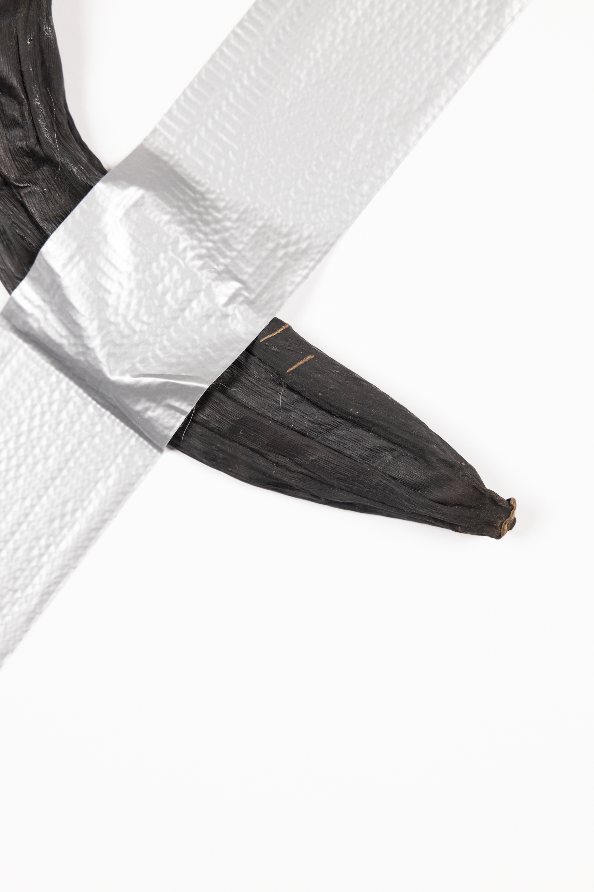
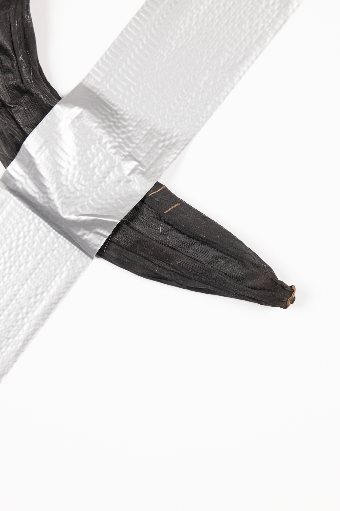
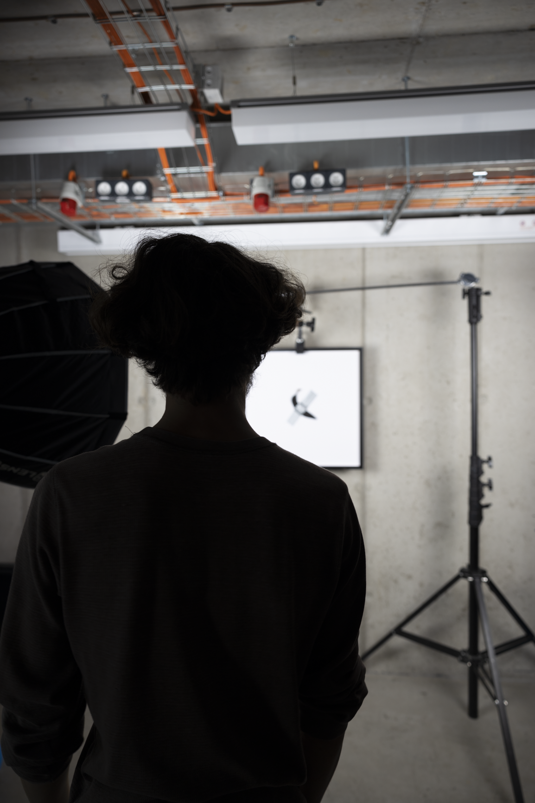
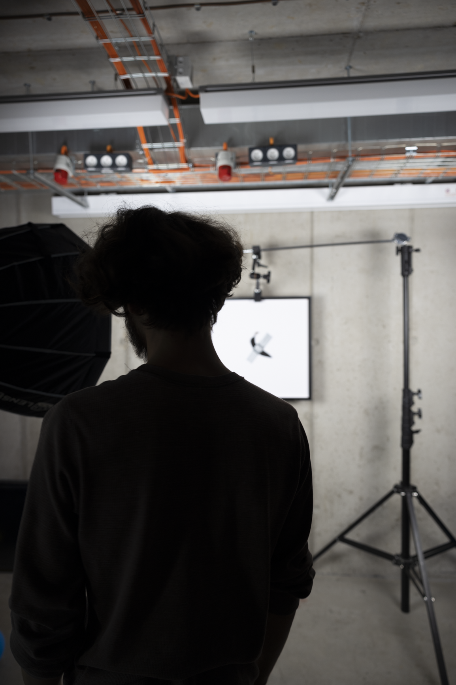
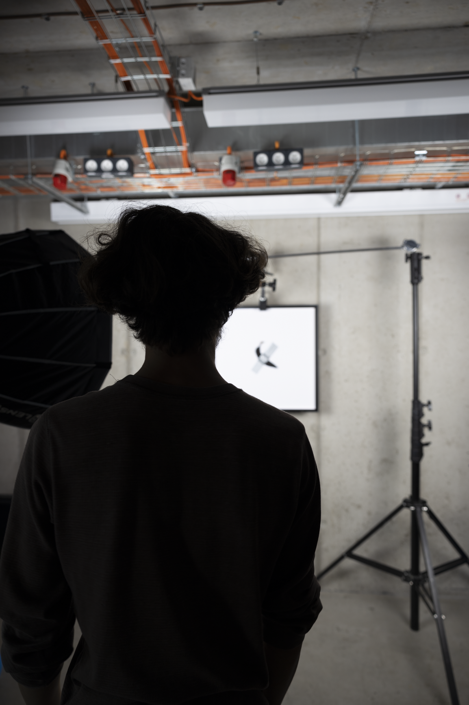
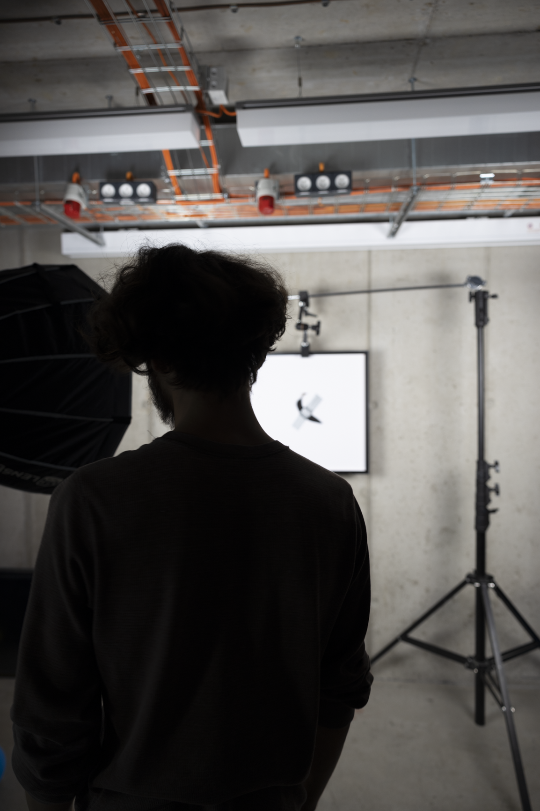

Uschlý Banán
Umělec je Komediant. Umění je pouhá zábava. Třešnička na dortu, bez které se obejdeme.
Uschlý Banán je rozkročen mezi dvěmi díly.
Dílem Italského konceptuálního umělce, který odebral vážnost trhu s uměním a umění vůbec.
A scénografickou zakázkou feministického filmu S Ní odehrávajícího se v pražském bytě fiktivní etablované režisérky, která si zvolila slávu svých filmů před sebou, mateřstvím, rodinou a přáteli.
Uschlý Banán je krystalizací l’art pour l’art. Je to uschlý Komediant Maurizia Cattelaniho, který se zatáhl z prostoru sám do sebe.
Lidé se smáli kýči tak dlouho, až ho vyčerpali. Samozvaný umělec pod tíhou absurdity své práce uschl. Jediné co společnost vidí na umění, je jeho dekadence, a tak je doménou uschlých starých mužů z řad elit, kteří si kousky odváží do temnot svých skladů.
Snad Vám je jasné, že na Cattelaniho dílo obraz navazuje nejenom jako oslavování, ale i jako následek nezájmu, který by nastal, kdyby nikdo na banán umělce neměl chuť. Kdyby nebylo hladovějících lidí a dětí. Kdyby nikdo nikdy nevystoupil z konzumní hry umělec – umění – divák a nesežral ho.
Protože až při porušení pravidel této hry nastává umělecký počin. Věcný moment. Moment sytosti a roztažení se do prostoru.
Jde o důsledek nezájmu vůči umění ve světě pouťových sladidel a atrakcí, které přestaly bavit, kterých je Cattelani principál, autor, majitel, vykořisťovatel. Kapitalista.
Vykořisťovatel komediantů.
Pán Komedie.
Teodor Mrkvička
 



 


